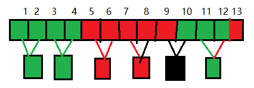

| 创建时间： | 2020/4/13 17:00 |
| 更新时间： | 2020/4/13 17:00 |
| 作者： | lzr |
有一种芯片，它有可能是好的或者坏的。
它们可以互相测试，可以验证对方的好坏。但是坏的芯片报告不准确，即不管它检测的芯片质量如何，报告可能好，也有可能坏。
此时给你n个芯片，其中好的芯片至少占一半以上，即为好的数量>n/2;
比如说总共有7个芯片，那好的至少有4个；如果总共8个芯片，那好的至少有五个。
现在给你n个芯片，需要从中拿出来一个好的芯片，那至少需要比较多少次，才能确保这个芯片是好的呢？
我们用这堆芯片去检测A：
利用这两个规律，我们可以尝试先用蛮力去尝试。
既然是要确保芯片是好的，那就要用运气最坏的情况去计算。
如果给n个芯片，每次拿一个芯片，用其他芯片去测试它，想要确定它的好坏，运气最差的情况下需要测试n-1次。
运气最差的情况下，前面拿的n/2次都是坏的芯片，直到n/2次的时候，坏的芯片就全都被拿走了。
那总共测试了多少次呢？总的来说，虽然说我们检测到是坏的芯片，就可以不用加入测试了，但是总的算下来，时间复杂度是O(n*n)。
那怎么才能简化测试呢？
在刚刚我们使用蛮力法的时候，我们的思路是每一轮测试就可以排除掉一颗芯片。有没有更简单高效的方法呢？
我们可以尝试使用两两比较。
根据我们一开始考虑的两种情况，如果两颗芯片互相测试，结果测试结果中只要有坏，那这两颗芯片中一定有一个坏的。
我们的总数中，好芯片是比坏芯片多的，所以一旦某一对中出现了坏，那直接把这一对都放弃，也就是一换一。就算是一换一，在剩下的芯片中，好的芯片依然是比坏芯片多的。那这两个相互测试，测试次数只有2，但是排除掉了全部的两个。
如果两颗芯片相互测试结果为都是好的，那么只有两种情况。俩都是好的，或者俩都是坏的。我们考虑运气最差情况。所有两两一组测试的时候，如果他俩都是坏的，那么他俩测试的结果是两个都是好的。但是我们可以确定的是，不管这两颗芯片到底是好的还是坏的，他俩肯定是一样的。那我们只需要从这一对中取出来一个芯片，那就完全可以代表他们这个小组了。
没理解？看以下这张图：

在两两比较之后，我们发现，在这种情况下，我们在13个芯片的数组里，经过了12次比较，剩下了5个芯片。那第13个呢？很简单，我们刚刚筛选出来的5个芯片去测试它，如果它是好的，那直接游戏结束，我们拿到了好的芯片。如果它是坏的，那我们游戏继续。
怎么样？是不是发现问题还是那个问题，但是游戏的规模却变小了？我们在第一轮，经过了12+5次检测，却排除掉了整整7个选项！
接下来的计算，我们继续按照上面的规则：
按照这个规则，我们可以在O(n*log(n))的复杂度内，找出一个好的芯片。
那我们接下来用一段代码来模拟一下上述的规则吧！
为了看得清楚明白，我们牺牲一部分的编码效率，提高可读性。
package lzr;
import java.util.Scanner;
public class XpTester {
//总数
private static int size;
//计数器
private static int count;
public static void main(String[] args) {
Scanner sc = new Scanner(System.in);
size = sc.nextInt();
Xp[] xps = new Xp[size];
//把芯片数组初始化
for (int i = 0; i < xps.length; i++) {
xps[i] = sc.nextInt()==0?new Xp(false,i):new Xp(true,i);
}
//当前数组中的数量
int s = size;
//下一轮数组中的数量
int next_s = 0;
//两个进行比较的Xp
Xp left = null,right = null;
while(s>3){
for(int i = 0;i<s;i++){
if(i%2==0){
//左侧
left = xps[i];
//如果奇数，且到达最后一位
if(i==s-1){
//数一数有多少芯片测试它是好的。
int t_count = 0;
for(int j = 0;j<next_s;j++){
count++;
if(xps[j].test(xps[i])){
t_count++;
if(t_count>next_s/2){
System.out.println("检测了"+count+"次！"+"\n好芯片的id为："+xps[i].id);
return;
}
}
}
}
}else{
right = xps[i];
//如果两个互相检测都为真，则把它加到数组中
if(left.test(right)&&right.test(left)){
//随便添加一个就行。
//覆盖掉已经处理过的位置不会有危险。
xps[next_s++] = left;
}
count+=2;
}
}
// 下一轮要测试的数量
s = next_s;
// 归零
next_s = 0;
}
if(xps[1].test(xps[0])&&xps[2].test(xps[0])){
count+=2;
System.out.println("检测了"+count+"次！"+"\n好芯片的id为："+xps[0].id);
}else{
count+=2;
System.out.println("检测了"+count+"次！"+"\n好芯片的id为："+xps[1].id);
}
}
}
//芯片类
class Xp{
//质量（好/坏）
private boolean val;
public int id;
public boolean test(Xp n){
if (val){
return n.val;
}
else{
//使用最差情况，每个坏的芯片都是演员，永远拍手叫好的那种
return true;
}
}
public Xp(boolean val,int id){
this.val = val;
this.id = id;
}
}
测试结果：
in:
7
0 0 1 1 0 1 1
out:
检测了8次！
好芯片的id为：6
in:
8
1 1 0 0 1 0 1 1
out:
检测了10次！
好芯片的id为：0